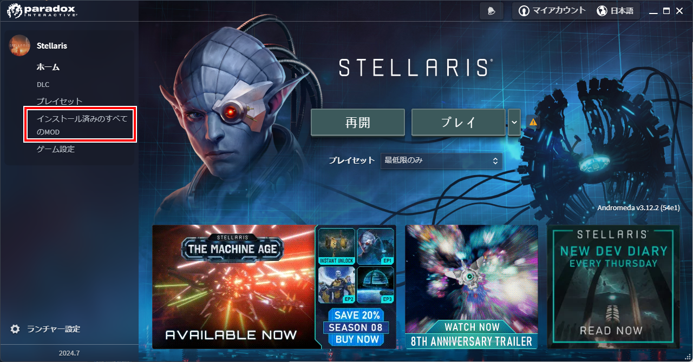
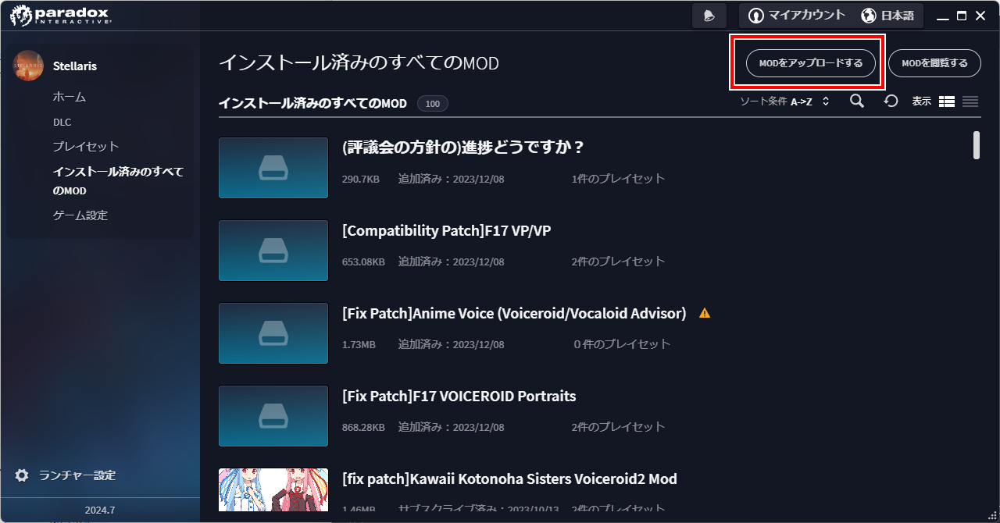
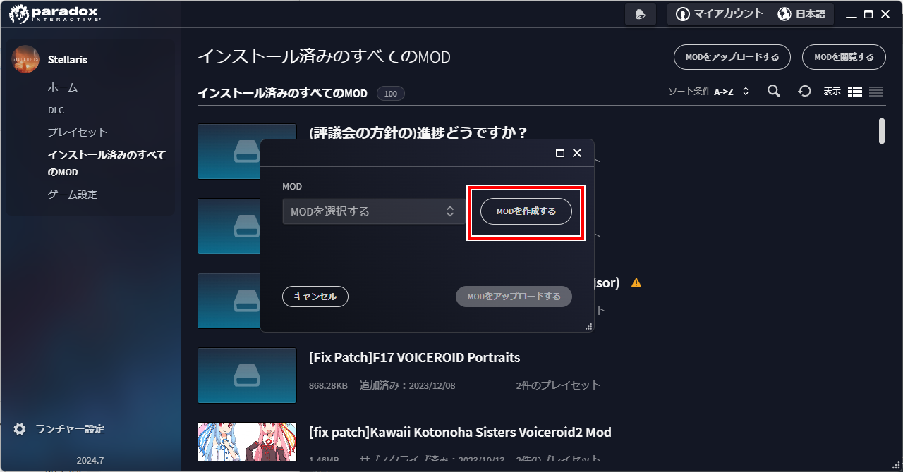
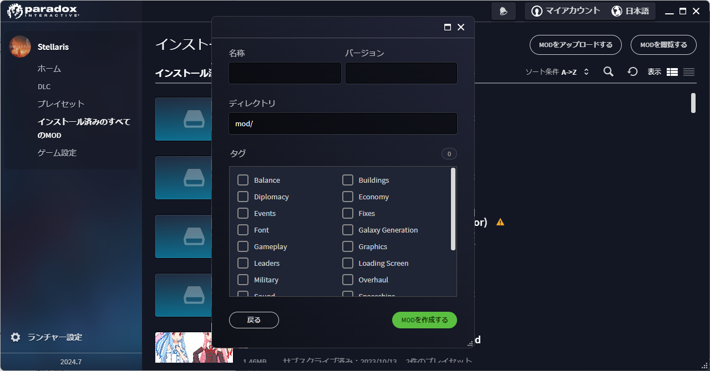

このガイドは静的画像を利用したポートレート＆種族の作り方を説明したものとなります。
アニメーションをするような種族追加の方法はこのガイドの対象外となりますので、
6thStrikeUnitさんのガイド、【Stellaris 3.9.x】アニメーションポートレート作成備忘録を確認してください。
本ガイド内のソースコードについてですが、基本的にはD-man Portraitsをベースに記載しています。
ただし、D-man Portraitsに存在していない部分については、[Compatibility Patch F17 VP/VP]から引っ張ってきています。
そのため全てのサンプルコードを1つにまとめても、そのままでは動作しません。その旨ご了承ください。
なお、本ガイドはWindows OS上で動作するSteam版のStellarisで動作することを前提としています。
他の環境化ではあまり参考にならない可能性がありますのでご了承ください。
1. 本ガイドを読む前に実施すべきこと
前提としてModの最低限の仕組みの理解のため、初心者のためのMod導入ガイドの一読をお願いします。
2. 作成にあたって必要なもの
2.1. 最終的な構成
最終的には画像のような項目を揃えていく必要があります。
青で塗りつぶされているものは必須、赤射線のものは任意です。
最終的な構成
C:\Users\(ユーザー名)\Documents\Paradox Interactive\Stellaris\mod\(MODのディレクトリ名)
├common
│├name_lists (1)
││└(種族名)_name_lists.txt
││
│├portrait_categories (2)
││└(種族名)_portrait_categories.txt
││
│├portrait_sets (3)
││└(種族名)_portrait_sets.txt
││
│├scripted_effects (4)
││└set_synth_or_robot_portrait_effect.txt
││
│├scripted_triggers (5)
││└wears_clothes.txt
││
│├species_classes (6)
││└!(種族名)_species_classes.txt
││
│└species_names (7)
│ └(種族名)_species_names.txt
│
├gfx
│├models
││└portraits (8)
││ └(ポートレート名)
││ ├(ポートレート名)-01.dds
││ ...(省略)
││ └(ポートレート名)-xx.dds
││
│└portraits
│ └portraits (9)
│ └(ポートレート名)_portraits.txt
│
├localisation (10)
│└(Mod名)_l_japanese.yml
│
├sound
│└portrait (11)
│ └(ポートレート名)
│ ├(ポートレート名).asset
│ ├(ポートレート名)-01.wav
│ ...(省略)
│ └(ポートレート名)-xx.wav
│
└descriptor.mod (12)| 1 | ネームリスト定義(必須) |
| 2 | 自作帝国作成時の種族選択画面表示用の定義(任意) |
| 3 | 種族-ポートレート紐付け用定義(必須) |
| 4 | ロボットや人口生命体のポートレートの初期設定の記述(任意) |
| 5 | 服を着た種族かどうかの判定処理(任意) |
| 6 | 種族定義(必須) |
| 7 | 種族名称定義(必須) |
| 8 | ポートレート画像(必須) |
| 9 | ポートレート定義(必須) |
| 10 | ローカライズ定義(必須) |
| 11 | 音声定義＆音声素材(任意) |
| 12 | Modの基本情報(必須) |
2.2. 素材
2.2.1. ポートレートとして追加したい静止画像(*.dds)
多少サイズは前後しても大丈夫そうですが、横 x 縦 = 472 x 324の大きさを目安として用意してください。
明確なサイズは決まっていないので、必ずしもこのサイズである必要はありませんが、
あまり大きすぎるとゲーム画面上で画像が見切れて表示される可能性があります。
ddsというファイル形式には、フリーソフトであればpaint.netというソフトが対応しています。
保存時のddsの設定は「B8G8R8A8(線形, A8R8G8B8)」にすると比較的劣化が少なそうです。
2.2.2. 音声ファイル(*.wav)
任意です。AI帝国を表示した時に音声も欲しい場合には必須となります。
真空波動研Liteというフリーソフトの表記で言う、以下の内容であれば問題ないようです。
PCM 44.10kHz 16Bit 2ch 1411.20kb/s
A.I.VOICEで作成した音源を使いたい場合は、以下のようにすると良いでしょう。
-
A.I.VOICEの設定を以下に設定し、必要な内容を喋らせて保存する
WAVE 44100Hz 16bit PCM -
ffmpegにて、Stellarisに準拠した音声データに変換する。以下はコマンドの例
ffmpeg -i (A.I.VOICEで出力したwavファイル) -acodec pcm_s16le -ac 2 -ar 44100 (変換後のファイル名)
3. Mod生成用フォルダを作成する
Stellarisのランチャーから自動生成できるので、その機能を活用しましょう。
-
Stellarisのランチャーを起動する
-
ランチャーの左メニューの、「インストール済みのすべてのMOD」をクリックする
 -
画面右上の「MODをアップロードする」を押す
 -
「MODを作成する」ボタンを押す
 -
以下の内容を入力して、「OK」ボタンを押す
-
名称: MODの名前を入力する。日本語も可
-
バージョン: このMODのバージョン。Stellaris本体のバージョンではないので注意。半角英数のみ
-
ディレクトリ: MOD作成用のディレクトリ名。半角英数記号のみ
-
タグ: WorkshopでMOD検索する時に使う。必要なタグにチェックを入れる
例 1. D-man Portraitsの場合-
名称: D-man Portraits
-
バージョン: 1.0.0
-
ディレクトリ: mod/d-man_portraits
-
タグ: Graphics, Leaders, Speciesにチェック
-
 -
ここまでの操作をすることで、以下のディレクトリが作成されます。
C:\Users\(ユーザー名)\Documents\Paradox Interactive\Stellaris\mod\(5.のディレクトリ名)
これ以降の作業は、原則このディレクトリ以下を基準として記載していきます。
「MODを作成する」領域を作るために「MODをアップロードする」ボタンを押さないといけないのは、
正直意味不明なのでこの辺の導線については今後なんとかして欲しいですね…。
4. ネームリストを作成する
種族やポートレートの追加をせず、ネームリストだけを作りたいといった場合もあると思うので、
まずはネームリストの作成部分を作成しましょう。
ネームリスト表示のために必要な構成
C:\Users\(ユーザー名)\Documents\Paradox Interactive\Stellaris\mod\(MODのディレクトリ名)
├common
│├name_lists (1)
││└(種族名)_name_lists.txt
││
│├species_classes (2)
││└!(種族名)_species_classes.txt
││
│└species_names (3)
│ └(種族名)_species_names.txt
│
└localisation (4)
└(Mod名)_l_japanese.yml| 1 | ネームリスト定義(必須) |
| 2 | 種族定義(必須) |
| 3 | 種族名称定義(必須) |
| 4 | ローカライズ定義(必須) |
4.1. 空の種族定義を作成する
ネームリスト定義は種族と紐付いているので、まずはポートレートの設定されていない空の種族定義を作成します。
以下の構成で、新規のテキストファイルを作成してください。
C:\Users\(ユーザー名)\Documents\Paradox Interactive\Stellaris\mod\(MODのディレクトリ名)
└common
└species_classes
└!(種族名)_species_classes.txt ← これを作るテキストエディタを開き、種族の定義を記述していきましょう。
以下はD言語くんの定義を作成した時のサンプルです。
保存する際の文字コードはUTF-8 BOMなしを指定してください。
# Mod側のspecies_classesのファイル名の付け方についての補足)
# ファイル名順で昇順ソートしたときに、以下の順序になるようなファイル名にしておくと良い
# ・Modのファイル名
# ・00_species_classes.txt
# ・01_base_species_classes.txt
#
# この順序になるようにしておくと、バニラのgraphical_cultureを使い回したときに
# 都市外観等に表示される種族名がバニラのまま変わらないので、影響範囲を最小限に抑えられる。
# 本ファイルの先頭に「!」をつけているのはこのファイル名の順序を意識した意図的なものとなっている。
#
##############################################################
# D言語くん種族用の定義
##############################################################
# D言語くん(有機種族)
d-man-biologicals = {
playable = { always = yes }
randomized = no
generate_shipset = no
graphical_culture = humanoid_01
}
# D言語くん種族(機械知性)
d-man-machines = {
playable = { always = yes }
randomized = no
generate_shipset = no
graphical_culture = humanoid_01
}
# D言語くん種族(岩石種族)
d-man-lithoids = {
playable = { always = yes }
randomized = no
generate_shipset = no
graphical_culture = humanoid_01
}これで、ポートレートの指定のされていない空の種族、D言語くん(有機種族)
D言語くん種族(機械知性)、D言語くん種族(岩石種族)が作成できました。
d-man-biologicalsやd-man-machinesの部分については好きな半角英数字を指定できますが、
基本的には自分が作ろうとしている種族の名前にすると良いでしょう。
graphical_cultureについては、バニラの既存の種族を使い回しています。
こちらは「ヒューマノイド」や「鳥人」などのタイプ毎に
都市の背景や基地、艦隊などの見た目のデザインを用意するためのものなのですが、
私はこちらについてはあまり詳しくないので説明は割愛します。
※一応過去に私が書いたSteamガイドの9章にて軽く触れていますが、あまり参考にならないと思います。
4.2. ネームリスト定義を作成する
次にネームリストを作成します。
C:\Users\(ユーザー名)\Documents\Paradox Interactive\Stellaris\mod\(MODのディレクトリ名)
└common
└name_lists
└(種族名)_name_lists.txt ← これを作る以下はD言語くんの定義を作成した時のサンプルです。
保存する際の文字コードはUTF-8 BOMありを指定してください。
BOMありです。何故かこのファイルは他と違ってBOMありにしないといけないので注意してください。
common\name_lists\d-man_name_lists.txt
# D言語くん(有機種族)
d-man-biologicals = {
selectable = { always = yes }
ship_names = {
corvette = {
HUMAN1_SHIP_Aardvark HUMAN1_SHIP_Accentor # 以下略
}
destroyer = {
HUMAN1_SHIP_Amsterdam HUMAN1_SHIP_Austin # 以下略
}
cruiser = {
HUMAN1_SHIP_Bolivar HUMAN1_SHIP_Brusilov # 以下略
}
battleship = {
HUMAN1_SHIP_Ulysses HUMAN1_SHIP_Xenophon # 以下略
}
titan = {
HUMAN1_SHIP_Enterprise HUMAN1_SHIP_Invincible # 以下略
}
colossus = {
HUMAN1_SHIP_SolInvictus HUMAN1_SHIP_Adjudicator # 以下略
}
juggernaut = {
HUMAN1_SHIP_Ararat HUMAN1_SHIP_AxisMundi # 以下略
}
constructor = {
HUMAN1_SHIP_Pacific HUMAN1_SHIP_Atlantic # 以下略
}
colonizer = {
HUMAN1_SHIP_Mayflower HUMAN1_SHIP_Abundance # 以下略
}
sponsored_colonizer = { # needed when there are no generic names
HUMAN1_SHIP_Mayflower HUMAN1_SHIP_Abundance # 以下略
}
science = {
HUMAN1_SHIP_Aldrin HUMAN1_SHIP_Armstrong # 以下略
}
transport = {
HUMAN1_SHIP_Cowpens HUMAN1_SHIP_BelleauWood # 以下略
}
military_station_small = {
HUMAN1_SHIP_Citadel HUMAN1_SHIP_Albacore # 以下略
}
ion_cannon = {
HUMAN1_SHIP_Bombard HUMAN1_SHIP_Ballista # 以下略
}
}
fleet_names = {
sequential_name = HUMAN1_FLEET
}
army_names = {
generic = {
sequential_name = HUMAN1_EXPEDITIONARYFORCE
}
machine_defense = {
sequential_name = HUMAN1_PLANETARYGUARD
}
machine_assault_1 = {
sequential_name = HUMAN1_EXPEDITIONARYFORCE
}
machine_assault_2 = {
sequential_name = HUMAN1_EXPEDITIONARYFORCE
}
machine_assault_3 = {
sequential_name = HUMAN1_EXPEDITIONARYFORCE
}
defense_army = {
sequential_name = HUMAN1_PLANETARYGUARD
}
assault_army = {
sequential_name = HUMAN1_EXPEDITIONARYFORCE
}
slave_army = {
sequential_name = HUMAN1_INDENTUREDRIFLES
}
clone_army = {
sequential_name = HUMAN1_CLONEARMY
}
perfected_clone_army = {
sequential_name = HUMAN1_CLONEARMY
}
undead_army = {
sequential_name = HUMAN1_DREADCOMMANDO
}
robotic_army = {
sequential_name = HUMAN1_HUNTERKILLERGROUP
}
robotic_defense_army = {
sequential_name = HUMAN1_GROUNDDEFENSEMATRIX
}
psionic_army = {
sequential_name = HUMAN1_PSICOMMANDO
}
xenomorph_army = {
sequential_name = HUMAN1_BIOWARFAREDIVISION
}
gene_warrior_army = {
random_names = {
HUMAN1_ARMY_SARC-AGladiators HUMAN1_ARMY_SARC-BWidowmakers # 以下略
}
sequential_name = HUMAN1_BIOENGINEEREDSQUADRON
}
occupation_army = {
sequential_name = HUMAN1_GARRISONFORCE
}
individual_machine_occupation_army = {
sequential_name = HUMAN1_GARRISONFORCE
}
robotic_occupation_army = {
sequential_name = HUMAN1_MECHANIZEDGARRISON
}
primitive_army = {
sequential_name = HUMAN1_PRIMITIVEARMY
}
industrial_army = {
sequential_name = HUMAN1_INDUSTRIALARMY
}
postatomic_army = {
sequential_name = HUMAN1_POSTATOMICARMY
}
warpling_army = {
sequential_name = seq_warpling_army
}
abomination_army = {
sequential_name = seq_abomination_army
}
wilderness_pre_sapient_defence_army = {
sequential_name = seq_wilderness_pre_sapient_defence_army
}
wilderness_pre_sapient_assault_army = {
sequential_name = seq_wilderness_pre_sapient_assault_army
}
}
planet_names = {
generic = {
names = {
HUMAN1_PLANET_NewJerusalem HUMAN1_PLANET_Anchor # 以下略
}
}
pc_desert = {
names = {
HUMAN1_PLANET_NovaArabia HUMAN1_PLANET_Sahara # 以下略
}
}
pc_arid = {
names = {
HUMAN1_PLANET_Lebanon HUMAN1_PLANET_Tyre # 以下略
}
}
pc_tropical = {
names = {
HUMAN1_PLANET_Amazonia HUMAN1_PLANET_Congo # 以下略
}
}
pc_continental = {
names = {
HUMAN1_PLANET_Albion HUMAN1_PLANET_Amor # 以下略
}
}
pc_gaia = {
names = {
HUMAN1_PLANET_Eden HUMAN1_PLANET_Elysium # 以下略
}
}
pc_ocean = {
names = {
HUMAN1_PLANET_Atlantis HUMAN1_PLANET_Oceania # 以下略
}
}
pc_tundra = {
names = {
HUMAN1_PLANET_Iceland HUMAN1_PLANET_Canada # 以下略
}
}
pc_arctic = {
names = {
HUMAN1_PLANET_Thule HUMAN1_PLANET_Arctica # 以下略
}
}
pc_savannah = {
names = {
}
}
pc_alpine = {
names = {
}
}
}
### CHARACTERS
character_names = {
default = {
first_names_male = {
HUMAN1_CHR_John HUMAN1_CHR_Brian # 以下略
}
first_names_female = {
HUMAN1_CHR_Olivia HUMAN1_CHR_Emily # 以下略
}
second_names = {
HUMAN1_CHR_Smith HUMAN1_CHR_Jones # 以下略
}
regnal_first_names_male = {
HUMAN1_CHR_Alexander HUMAN1_CHR_Vladimir # 以下略
}
regnal_first_names_female = {
HUMAN1_CHR_Theodora HUMAN1_CHR_Fatima # 以下略
}
regnal_second_names = {
HUMAN1_CHR_Habsburg HUMAN1_CHR_Romanov # 以下略
}
}
}
}
# D言語くん種族(機械知性)
d-man-machines = {
selectable = { always = no }
# 以下、d-man-biologicalsと中身は同じため省略
}
# D言語くん種族(岩石種族)
d-man-lithoids = {
selectable = { always = no }
# 以下、d-man-biologicalsと中身は同じため省略
}考えるのが面倒だったので既存の定義を丸々引っ張っています。
d-man-biologicalsの部分は、種族定義と名前を一致させる必要があります。
サンプルコード上の「HUMAN1_xxxxx」の部分は、後述するローカライズ定義のキー名になります。
古いバージョンだと、キー名ではなく直接ここに日本語で名前を記述していたかと思いますが、
最新の環境では多言語対応を簡単にするため、一旦キー名を記載するようになりました。
selectable = { always = no }の部分は、新規で自作帝国を作成する時の
ネームリストの選択欄にこのネームリストを載せないようにするための記述です。
always = yesにすると逆に載るようになります。
サンプルの場合は有機種族のネームリストのみ載るようにしています。
4.3. 種族名称定義を作成する
続いて種族名称定義を作成します。
この定義は自作帝国作成時のランダム名称の設定や、ゲーム開始時に出てくるランダム帝国の国家名や種族名として利用されます。
C:\Users\(ユーザー名)\Documents\Paradox Interactive\Stellaris\mod\(MODのディレクトリ名)
└common
└species_names
└(種族名)_species_names.txt ← これを作る以下はD言語くんの定義を作成した時のサンプルです。
保存する際の文字コードはUTF-8 BOMなしを指定してください。
##############################################################
# ランダム生成される帝国名用の定義
# name : 種族名
# plural : 種族名(複数形)
# home_planet : 惑星名
# home_system : 恒星名
# name_list : ネームリスト…思いつかないので公式のHUM1を使い回し
##############################################################
### D言語くん種族(有機種族)
d-man-biologicals = {
d-man1 = {
name = SPEC_D-MAN
plural = SPEC_D-MAN_pl
home_planet = SPEC_D-MAN_planet1
home_system = SPEC_D-MAN_system1
name_list = "d-man-biologicals"
}
d-man2 = {
name = SPEC_D-MAN
plural = SPEC_D-MAN_pl
home_planet = SPEC_D-MAN_planet2
home_system = SPEC_D-MAN_system2
name_list = "d-man-biologicals"
}
d-man3 = {
name = SPEC_D-MAN
plural = SPEC_D-MAN_pl
home_planet = SPEC_D-MAN_planet3
home_system = SPEC_D-MAN_system3
name_list = "d-man-biologicals"
}
d-man4 = {
name = SPEC_D-MAN
plural = SPEC_D-MAN_pl
home_planet = SPEC_D-MAN_planet4
home_system = SPEC_D-MAN_system4
name_list = "d-man-biologicals"
}
d-man5 = {
name = SPEC_D-MAN
plural = SPEC_D-MAN_pl
home_planet = SPEC_D-MAN_planet5
home_system = SPEC_D-MAN_system5
name_list = "d-man-biologicals"
}
d-man6 = {
name = SPEC_D-MAN
plural = SPEC_D-MAN_pl
home_planet = SPEC_D-MAN_planet6
home_system = SPEC_D-MAN_system6
name_list = "d-man-biologicals"
}
}
# D言語くん種族(機械知性)
d-man-machines = {
d-man11 = {
name = SPEC_D-MAN
plural = SPEC_D-MAN_pl
home_planet = SPEC_D-MAN_planet1
home_system = SPEC_D-MAN_system1
name_list = "d-man-machines"
}
d-man12 = {
name = SPEC_D-MAN
plural = SPEC_D-MAN_pl
home_planet = SPEC_D-MAN_planet2
home_system = SPEC_D-MAN_system2
name_list = "d-man-machines"
}
d-man13 = {
name = SPEC_D-MAN
plural = SPEC_D-MAN_pl
home_planet = SPEC_D-MAN_planet3
home_system = SPEC_D-MAN_system3
name_list = "d-man-machines"
}
d-man14 = {
name = SPEC_D-MAN
plural = SPEC_D-MAN_pl
home_planet = SPEC_D-MAN_planet4
home_system = SPEC_D-MAN_system4
name_list = "d-man-machines"
}
d-man15 = {
name = SPEC_D-MAN
plural = SPEC_D-MAN_pl
home_planet = SPEC_D-MAN_planet5
home_system = SPEC_D-MAN_system5
name_list = "d-man-machines"
}
d-man16 = {
name = SPEC_D-MAN
plural = SPEC_D-MAN_pl
home_planet = SPEC_D-MAN_planet6
home_system = SPEC_D-MAN_system6
name_list = "d-man-machines"
}
}
# D言語くん種族(岩石種族)
d-man-lithoids = {
d-man21 = {
name = SPEC_D-MAN
plural = SPEC_D-MAN_pl
home_planet = SPEC_D-MAN_planet1
home_system = SPEC_D-MAN_system1
name_list = "d-man-lithoids"
}
d-man22 = {
name = SPEC_D-MAN
plural = SPEC_D-MAN_pl
home_planet = SPEC_D-MAN_planet2
home_system = SPEC_D-MAN_system2
name_list = "d-man-lithoids"
}
d-man23 = {
name = SPEC_D-MAN
plural = SPEC_D-MAN_pl
home_planet = SPEC_D-MAN_planet3
home_system = SPEC_D-MAN_system3
name_list = "d-man-lithoids"
}
d-man24 = {
name = SPEC_D-MAN
plural = SPEC_D-MAN_pl
home_planet = SPEC_D-MAN_planet4
home_system = SPEC_D-MAN_system4
name_list = "d-man-lithoids"
}
d-man25 = {
name = SPEC_D-MAN
plural = SPEC_D-MAN_pl
home_planet = SPEC_D-MAN_planet5
home_system = SPEC_D-MAN_system5
name_list = "d-man-lithoids"
}
d-man26 = {
name = SPEC_D-MAN
plural = SPEC_D-MAN_pl
home_planet = SPEC_D-MAN_planet6
home_system = SPEC_D-MAN_system6
name_list = "d-man-lithoids"
}
}d-man-biologicalsの部分は、種族定義と名前を一致させる必要があります。
name_listの部分も基本的には同じ種族のネームリストの名前で合わせておきましょう。
別のネームリストを使う用に指定したものは、指定したネームリストと紐付いてしまうので、
自作帝国作成時のランダム命名処理が動作しなくなると言った問題が発生する可能性があります。
d-man1やd-man2などの名前は任意で良いのですが、ランダム生成される際に数が少なかったり
名前が被ったりするとゲームが強制終了してしまうことがあるみたいです。
※ただし落ちていたのを確認していたのがVer2系時代の話なので今はもしかしたら対策されているかもしれません。
1種族定義辺り最低6つ、名前を被らないようにして作れば、
強制終了も滅多に起きなくなるのではないかと思います。
name_list以外の項目の「=」の右側の部分は、後述するローカライズ定義のキー名になります。
古いバージョンだと、キー名ではなく直接ここに日本語で名前を記述していたかと思いますが、
最新の環境では多言語対応を簡単にするため、一旦キー名を記載するようになりました。
4.4. ローカライズ定義を作成する
最後にローカライズ定義を作成します。
C:\Users\(ユーザー名)\Documents\Paradox Interactive\Stellaris\mod\(MODのディレクトリ名)
└localisation
└(Mod名)_l_japanese.yml以下はD言語くんの定義を作成した時のサンプルです。
保存する際の文字コードはUTF-8 BOMありを指定してください。
BOMありです。このファイルは他と違ってBOMありにしないといけないので注意してください。
l_japanese:
d-man-biologicals: "D言語くん(有機)"
d-man-machines:0 "D言語くん(機械)"
d-man-lithoids:0 "D言語くん(岩石)"
name_list_d-man-biologicals: "D言語くん(有機)"
# species_names用のローカライズ定義
SPEC_D-MAN: "D-Man"
SPEC_D-MAN_pl: "D-Man"
SPEC_D-MAN_planet1: "D Lang"
SPEC_D-MAN_planet2: "D"
SPEC_D-MAN_planet3: "D-Man"
SPEC_D-MAN_planet4: "Go Lang"
SPEC_D-MAN_planet5: "Go"
SPEC_D-MAN_planet6: "Lisp"
SPEC_D-MAN_system1: "DMD"
SPEC_D-MAN_system2: "GDC"
SPEC_D-MAN_system3: "LDC"
SPEC_D-MAN_system4: "gc"
SPEC_D-MAN_system5: "Gccgo"
SPEC_D-MAN_system6: "CLISP"
# name_lists用の定義
# ※今回はバニラのキー名を使い回しているので省略するが一応記載する場合のサンプルを載せておく
HUMAN1_SHIP_Aardvark: "アードヴァーク"
HUM1_SHIP_RhuntheUnyielding: "不屈のルーン"
# 以下略species_namesやname_listsでローカライズ用のキー名を記載しておくと書きましたが、
そのキー名をコロンの左側に、実際に表示させたい日本語を右側に記載するような形式となります。
なお、拡張子ymlのファイルは、YAMLというファイル形式に則った記述をする必要があります。
ただのテキストファイルではないです。
具体的にはl_japanese:以降の行のインデントは全て揃えてください。
うろ覚えだけど形式上スペースの数自体は何個でも良かったはず。
スペース2個がYAMLでよく見るインデント数かな…。
他の言語にも対応したい場合はそれぞれの言語ファイルも用意しましょう。
今回は自分が多言語で書けないので割愛します。
ネームリストだけ作成したい場合はここまでの手順で実現可能なはずです。 ネームリストの作成部分については以上です。
5. ポートレート＆種族を作成する
ネームリストの作成が終わったら今度はネームリストを作成した種族について、
ポートレートを追加し種族として利用できるようにしてみましょう。
ポートレート追加のために必要な構成
C:\Users\(ユーザー名)\Documents\Paradox Interactive\Stellaris\mod\(MODのディレクトリ名)
├common
│├name_lists (1)
││└(種族名)_name_lists.txt
││
│├portrait_categories (2)
││└(種族名)_portrait_categories.txt
││
│├portrait_sets (3)
││└(種族名)_portrait_sets.txt
││
│├species_classes (4)
││└!(種族名)_species_classes.txt
││
│└species_names (5)
│ └(種族名)_species_names.txt
│
├gfx
│├models
││└portraits (6)
││ └(ポートレート名)
││ ├(ポートレート名)-01.dds
││ ...(省略)
││ └(ポートレート名)-xx.dds
││
│└portraits
│ └portraits (7)
│ └(ポートレート名)_portraits.txt
│
├localisation (8)
└(Mod名)_l_japanese.yml| 1 | ネームリスト定義(必須) |
| 2 | 自作帝国作成時の種族選択画面表示用の定義(任意) |
| 3 | 種族-ポートレート紐付け用定義(必須) |
| 4 | 種族定義(必須) |
| 5 | 種族名称定義(必須) |
| 6 | ポートレート画像(必須) |
| 7 | ポートレート定義(必須) |
| 8 | ローカライズ定義(必須) |
5.1. ポートレート素材を所定の場所に配置する
以下の通り、ポートレート用の素材画像を配置しましょう。
C:\Users\(ユーザー名)\Documents\Paradox Interactive\Stellaris\mod\(MODのディレクトリ名)
└gfx
└models
└portraits
└(ポートレート名)
├(ポートレート名)-01.dds
...(省略)
└(ポートレート名)-xx.ddsファイル名については、既存のゲームのファイル名と被らなければ基本的にはなんでも構いません。
以下のように命名ルールを決めておくと管理しやすくなるのではないかとは思います。
-
(種族名)-(ポトレ名)-(通し番号)
-
(ポートレート名)-(通し番号)
5.2. ポートレート定義を作成する
次にポートレート定義を作成します。
C:\Users\(ユーザー名)\Documents\Paradox Interactive\Stellaris\mod\(MODのディレクトリ名)
└gfx
└portraits
└portraits
└(ポートレート名)_portraits.txtテキストエディタを開き、ポートレートの定義を記述していきましょう。
以下はD言語くんの定義を作成した時のサンプルです。
保存する際の文字コードはUTF-8 BOMなしを指定してください。
gfx\portraits\portraits\d-man_portraits.txt
##############################################################
# D言語くん種族用のポートレート定義
# 本ポートレートを参照する種族の定義は以下に記載しています
# common\species_classes\d-man.txt
##############################################################
# 画像、音声ファイルとのリンク設定
portraits = {
d-man_red = { texturefile = "gfx/models/portraits/d-man/d-man-red.dds" greeting_sound = "d-man_portrait_sound_red" }
d-man_green = { texturefile = "gfx/models/portraits/d-man/d-man-green.dds" greeting_sound = "d-man_portrait_sound_green" }
d-man_blue = { texturefile = "gfx/models/portraits/d-man/d-man-blue.dds" greeting_sound = "d-man_portrait_sound_blue" }
d-man_cyan = { texturefile = "gfx/models/portraits/d-man/d-man-cyan.dds" greeting_sound = "d-man_portrait_sound_cyan" }
d-man_magenta = { texturefile = "gfx/models/portraits/d-man/d-man-magenta.dds" greeting_sound = "d-man_portrait_sound_magenta" }
d-man_yellow = { texturefile = "gfx/models/portraits/d-man/d-man-yellow.dds" greeting_sound = "d-man_portrait_sound_yellow" }
}
# 各場面別のポートレート
portrait_groups = {
# D言語君(有機生命) 単色のみ
d-man-biological-01 = {
# デフォルト
default = d-man_red
# 帝国作成時
game_setup = {
add = {
trigger = { ruler = { OR = { gender = male gender = indeterminable } } }
portraits = {
d-man_red
}
}
add = {
trigger = { ruler = { OR = { gender = female gender = indeterminable } } }
portraits = {
d-man_red
}
}
}
# 汎用
species = {
add = {
trigger = {
exists = species
NOT = { species = { species_gender = female } }
}
portraits = {
d-man_red
}
}
add = {
trigger = {
exists = species
NOT = { species = { species_gender = male } }
}
portraits = {
d-man_red
}
}
}
# 惑星上のPOP
pop = {
add = {
trigger = { NOT = { species = { species_gender = female } } }
portraits = {
d-man_red
}
}
add = {
trigger = { NOT = { species = { species_gender = male } } }
portraits = {
d-man_red
}
}
}
#リーダー
leader = {
add = {
trigger = { OR = { gender = male gender = indeterminable } }
portraits = {
d-man_red
}
}
add = {
trigger = { OR = { gender = female gender = indeterminable } }
portraits = {
d-man_red
}
}
}
# 国家元首
ruler = {
add = {
trigger = { OR = { gender = male gender = indeterminable } }
portraits = {
d-man_red
}
}
add = {
trigger = { OR = { gender = female gender = indeterminable } }
portraits = {
d-man_red
}
}
}
}
# D言語君(有機生命) 6色カラー
d-man-biological-02 = {
# デフォルト
default = d-man_red
# 帝国作成時
game_setup = {
add = {
trigger = { ruler = { OR = { gender = male gender = indeterminable } } }
portraits = {
d-man_red d-man_green d-man_blue
}
}
add = {
trigger = { ruler = { OR = { gender = female gender = indeterminable } } }
portraits = {
d-man_cyan d-man_magenta d-man_yellow
}
}
}
# 汎用
species = {
add = {
trigger = {
exists = species
NOT = { species = { species_gender = female } }
}
portraits = {
d-man_red d-man_green d-man_blue
}
}
add = {
trigger = {
exists = species
NOT = { species = { species_gender = male } }
}
portraits = {
d-man_cyan d-man_magenta d-man_yellow
}
}
}
# 惑星上のPOP
pop = {
add = {
trigger = { NOT = { species = { species_gender = female } } }
portraits = {
d-man_red d-man_green d-man_blue
}
}
add = {
trigger = { NOT = { species = { species_gender = male } } }
portraits = {
d-man_cyan d-man_magenta d-man_yellow
}
}
}
#リーダー
leader = {
add = {
trigger = { OR = { gender = male gender = indeterminable } }
portraits = {
d-man_red d-man_green d-man_blue
}
}
add = {
trigger = { OR = { gender = female gender = indeterminable } }
portraits = {
d-man_cyan d-man_magenta d-man_yellow
}
}
}
# 国家元首
ruler = {
add = {
trigger = { OR = { gender = male gender = indeterminable } }
portraits = {
d-man_red d-man_green d-man_blue
}
}
add = {
trigger = { OR = { gender = female gender = indeterminable } }
portraits = {
d-man_cyan d-man_magenta d-man_yellow
}
}
}
}
# D言語君(機械知性) 単色のみ
d-man-machine-01 = {
# d-man-biological-01と中身は同じなので省略
}
# D言語君(機械知性) 6色カラー
d-man-machine-02 = {
# d-man-biological-02と中身は同じなので省略
}
# D言語君(岩石生命) 単色のみ
d-man-lithoid-01 = {
# d-man-biological-01と中身は同じなので省略
}
# D言語君(岩石生命) 6色カラー
d-man-lithoid-02 = {
# d-man-biological-02と中身は同じなので省略
}
# D言語君(ロボット) 単色のみ
d-man-robot-01 = {
# d-man-biological-01と中身は同じなので省略
}
# D言語君(ロボット) 6色カラー
d-man-robot-02 = {
# d-man-biological-02と中身は同じなので省略
}portraitsにて、画像素材及び音声素材との紐付けをしています。
性別やスキルに応じてどのポートレートを使えるかの条件をportrait_groupsの中に記述していきます。
赤色単色だけの定義についてはここまで条件を細かく設定しなくてもよさそうですが、
一応下手に弄りたくなかったので、バニラの定義を参考にそのままにしています。
triggerの条件を変えれば性別以外に種族やリーダーの特性や幸福度に応じたポートレート画像を指定するなんてことも可能です。
また、同じ画像素材で有機生命、機械知性、岩石生命と種族を分ける場合は
条件が同じでも必ずこのポートレート定義は分けて作るようにしてください。
この定義を使い回すと、以下の動画のように意図しない挙動を起こします。
greeting_soundは後述の音声の追加が必要な場合にのみ記載をしてください。
音声の追加がない場合は記載を省略しましょう。
5.3. 種族定義を修正する
ネームリスト作成時の手順で作った空の種族定義に、
有機種族用、機械種族用、岩石種族用の設定をそれぞれ追記しましょう。
C:\Users\(ユーザー名)\Documents\Paradox Interactive\Stellaris\mod\(MODのディレクトリ名)
└common
└species_classes
└!(種族名)_species_classes.txt以下はD言語くんの定義を作成した時のサンプルです。
内容としては3.12.1時点のバニラの人類、機械、岩石種族用の内容を踏襲しています。
各パラメータの意味についてはソース内のコメントから判断してください。
# Mod側のspecies_classesのファイル名の付け方についての補足)
# ファイル名順で昇順ソートしたときに、以下の順序になるようなファイル名にしておくと良い
# ・Modのファイル名
# ・00_species_classes.txt
# ・01_base_species_classes.txt
#
# この順序になるようにしておくと、バニラのgraphical_cultureを使い回したときに
# 都市外観等に表示される種族名がバニラのまま変わらないので、影響範囲を最小限に抑えられる。
# 本ファイルの先頭に「!」をつけているのはこのファイル名の順序を意識した意図的なものとなっている。
#
##############################################################
# D言語くん種族用の定義
##############################################################
# D言語くん種族(有機種族)
d-man-biologicals = {
# 種別
# BIOLOGICAL:有機種族
# MACHINE:機械知性
# ROBOT:ロボティクス
# LITHOID:岩石種族
# PRESAPIENT:準知性
# OTHER:その他
archetype = BIOLOGICAL
# 権限の設定
# バニラの人類の条件に準拠
# 機械知性は選択不可
possible = { authority = { NOT = { value = auth_machine_intelligence text = SPECIES_CLASS_MUST_NOT_USE_MACHINE_INTELLIGENCE } } }
# デフォルト種族特性「有機生命」
trait = "trait_organic"
# 艦船セットを利用しない
generate_shipset = no
# グラフィックカルチャー
graphical_culture = humanoid_01
}
# D言語くん種族(機械知性)
d-man-machines = {
# 種別
# BIOLOGICAL:有機種族
# MACHINE:機械知性
# ROBOT:ロボティクス
# LITHOID:岩石種族
# PRESAPIENT:準知性
# OTHER:その他
archetype = MACHINE
# この種族を利用可能な条件
# バニラの機械種族の条件に準拠
possible = {
AND = {
limit = {
has_machine_age_dlc = yes
}
authority = {
NOT = {
value = auth_hive_mind
}
}
}
AND = {
limit = {
has_machine_age_dlc = no
}
authority = { # Prunes every potential authority except machine intelligence
NOR = {
value = auth_democratic
value = auth_oligarchic
value = auth_dictatorial
value = auth_imperial
value = auth_hive_mind
value = auth_ancient_machine_intelligence
value = auth_corporate
text = SPECIES_CLASS_MUST_USE_MACHINE_INTELLIGENCE
}
}
ethics = { # Prunes every potential etchic except gestalt consciousness
NOR = {
value = ethic_fanatic_authoritarian
value = ethic_authoritarian
value = ethic_fanatic_egalitarian
value = ethic_egalitarian
value = ethic_fanatic_xenophobe
value = ethic_xenophobe
value = ethic_fanatic_xenophile
value = ethic_xenophile
value = ethic_fanatic_militarist
value = ethic_militarist
value = ethic_fanatic_pacifist
value = ethic_pacifist
value = ethic_fanatic_spiritualist
value = ethic_spiritualist
value = ethic_fanatic_materialist
value = ethic_materialist
text = SPECIES_CLASS_MUST_USE_GESTALT_CONSCIOUSNESS
}
}
}
AND = {
limit = {
has_synthetic_dawn = no
has_machine_age_dlc = no
has_shroud_dlc = yes
}
origin = {
value = origin_shroud_forged
}
}
}
possible_secondary = {
always = no
text = SECONDARY_SPECIES_CLASS_INVALID
}
# プレイ可能な条件
# バニラの機械種族の条件に準拠
# 機械知性はDLC(Synthetic Dawn)または(Machine Age)が必須
playable = {
OR = {
has_synthetic_dawn = yes
has_machine_age_dlc = yes
AND = {
is_scope_valid = yes
has_origin = origin_shroud_forged
}
}
}
randomized = {
OR = {
has_synthetic_dawn = yes
has_machine_age_dlc = yes
AND = {
is_scope_valid = yes
has_origin = origin_shroud_forged
}
}
# The create_species effect can't properly take the possible trigger below into account.
# Work around this by disabling this class for species randomization after game start.
NOT = {
has_global_flag = game_started
}
}
# デフォルト種族特性「機械」
trait = trait_machine_unit
# 性別:オリジナルの機械知性だとyesだが、自由度を増やしたいので敢えて外しておく
# gender = yes
# 居住特性の選択:なし
use_climate_preference = no
# 種族の改造時のポートレートの変更:あり
portrait_modding = yes
# 雇用時のリーダーの年齢
leader_age_min = 5
leader_age_max = 10
# 艦船セットを利用しない
generate_shipset = no
# グラフィックカルチャー
graphical_culture = synthetics_01
}
# D言語くん種族(岩石種族)
d-man-lithoids = {
# 種別
# BIOLOGICAL:有機種族
# MACHINE:機械知性
# ROBOT:ロボティクス
# LITHOID:岩石種族
# PRESAPIENT:準知性
# OTHER:その他
archetype = LITHOID
# この種族を利用可能な条件
# バニラの岩石種族の条件に準拠
possible = { authority = { NOT = { value = auth_machine_intelligence text = SPECIES_CLASS_MUST_NOT_USE_MACHINE_INTELLIGENCE } } }
# プレイ可能な条件
# バニラの岩石種族の条件に準拠
playable = { has_lithoids = yes }
randomized = { has_lithoids = yes }
# デフォルト種族特性「岩石」
trait = "trait_lithoid"
# 艦船セットを利用しない
generate_shipset = no
# グラフィックカルチャー
graphical_culture = lithoid_01
}D言語くんのロボット種族用の定義が書かれていませんが、
ロボットはバニラに元々存在する種族であり、記載する必要はありません。
ちなみにrandomized = noにすると、ランダム生成帝国が出なくなるほか、
自作の帝国にこのポトレを指定してもAI帝国としては出現しなくなるようです。
ランダム生成帝国としては出したくないが自作の帝国をAI帝国として出現させたい場合は、
種族-ポートレート紐付け用定義内のnon_randomized_portraits = {}の部分に
出現させたくないポートレートを指定するようにしてください。
5.4. 種族-ポートレート紐付け用定義を作成する
種族定義とポートレート定義を作ったので、それぞれを紐付けするための定義ファイルを作成します。
C:\Users\(ユーザー名)\Documents\Paradox Interactive\Stellaris\mod\(MODのディレクトリ名)
└common
└portrait_sets
└(種族名)_portrait_sets.txt以下はD言語君のサンプルです。
保存する際の文字コードはUTF-8 BOMなしを指定してください。
# D言語くん種族(有機種族)
d-man-biologicals = {
species_class = d-man-biologicals
portraits = { "d-man-biological-01" "d-man-biological-02" }
}
# D言語くん種族(機械知性)
d-man-machines = {
species_class = d-man-machines
conditional_portraits = {
randomizable = { OR = { has_synthetic_dawn = yes has_machine_age_dlc = yes } }
playable = { OR = { has_synthetic_dawn = yes has_machine_age_dlc = yes } }
portraits = { "d-man-machine-01" "d-man-machine-02" }
}
}
# D言語くん種族(岩石種族)
d-man-lithoids = {
species_class = d-man-lithoids
conditional_portraits = {
randomizable = { has_lithoids = yes }
playable = { has_lithoids = yes }
portraits = { "d-man-lithoid-01" "d-man-lithoid-02" }
}
}
# D言語くん種族(ロボット)
d-man-robots = {
species_class = ROBOT
portraits = { "d-man-robot-01" "d-man-robot-02" }
}species_classの部分に種族定義、portraitsの部分にポートレート定義を記載することで紐付けを実施しています。
d-man-robotsなどと記載している部分については好きな文字列で良いのですが、わかりやすいので名前を合わせています。
5.5. 自作帝国作成時の種族選択画面表示用の定義を作成する
portrait_setsだけでは、自作帝国作成時の種族選択画面には表示されません。
ここに表示するためには、portrait_categoriesにも記述の追加が必要になります。
C:\Users\(ユーザー名)\Documents\Paradox Interactive\Stellaris\mod\(MODのディレクトリ名)
└common
└portrait_categories
└(種族名)_portrait_categories.txt以下はD言語君のサンプルです。
保存する際の文字コードはUTF-8 BOMなしを指定してください。
# D言語くん種族(有機種族)
d-man-biologicals = {
name = d-man-biologicals
sets = { d-man-biologicals }
}
# D言語くん種族(機械知性)
d-man-machines = {
name = d-man-machines
sets = { d-man-machines }
}
# D言語くん種族(岩石種族)
d-man-lithoids = {
name = d-man-lithoids
sets = { d-man-lithoids }
}ロボット種族用のD言語君は自作帝国作成時の種族選択画面に表示する必要がないのでサンプルコードにも記載をしていません。
サンプルだけだといまいちわかりづらいと思うので、補足の画像も合わせて記載しておきます。
ちなみに既存の外見に対して追加したい場合は、以下の通り既存定義を新しく定義し直してください。
setsの部分は新規追加分のみを記載すればOKです。
# 既存の「ヒューマノイド」にD言語君のポートレートを追加したい場合
humanoids = { # humanoidsはバニラにもある定義
name = HUM # ここはバニラのままにしておく
sets = { d-man-biologicals } # setsの部分は新規に追加したいものだけを記載する
}5.6. ローカライズ定義を必要な内容を追記する
最後にローカライズ定義に種族追加で必要となった内容を追記します。
C:\Users\(ユーザー名)\Documents\Paradox Interactive\Stellaris\mod\(MODのディレクトリ名)
└localisation
└(Mod名)_l_japanese.yml以下はD言語くんの定義を作成した時のサンプルです。
l_japanese:
d-man-biologicals:0 "D言語くん(有機)"
# species_classes用のローカライズ定義
d-man-biologicals_desc:0 "プログラム言語の1つ、D言語のマスコットキャラクター。プログラム言語マスコット界隈の中では恐らく最も人気のあるマスコットキャラクターだと思われる"
d-man-biologicals_plural:0 "D言語くん"
d-man-biologicals_adj:0 "D言語くんX"
d-man-biologicals_insult_01:0 "クリーチャー"
d-man-biologicals_insult_plural_01:0 "クリーチャー"
d-man-biologicals_compliment_01:0 "高級言語"
d-man-biologicals_compliment_plural_01:0 "高級言語"
d-man-biologicals_spawn:0 "子供"
d-man-biologicals_spawn_plural:0 "子供"
d-man-biologicals_sound_01:0 "ノイズ"
d-man-biologicals_sound_02:0 "ビープ音"
d-man-biologicals_sound_03:0 "鳴き声"
d-man-biologicals_sound_04:0 "声"
d-man-biologicals_sound_05:0 "音"
d-man-biologicals_organ:0 "空洞"
d-man-biologicals_organ_plural:0 "空洞"
d-man-biologicals_mouth:0 "空洞"
d-man-biologicals_ear:0 "聴覚器官"
d-man-biologicals_ear_plural:0 "聴覚器官"
d-man-biologicals_hand:0 "手"
d-man-biologicals_hand_plural:0 "手"
d-man-biologicals_tooth:0 "空洞"
d-man-biologicals_tooth_plural:0 "空洞"
d-man-biologicals_fossil:0 "化石"
d-man-biologicals_fossil_plural:0 "化石"
d-man-biologicals_remnant:0 "骨格"
d-man-biologicals_remnant_plural:0 "骨格"
name_list_d-man-biologicals: "D言語くん(有機)"
d-man-machines:0 "D言語くん(機械)"
d-man-machines_desc:0 "プログラム言語の1つ、D言語のマスコットキャラクター。プログラム言語マスコット界隈の中では恐らく最も人気のあるマスコットキャラクターだと思われる"
d-man-machines_plural:0 "D言語くん"
d-man-machines_adj:0 "D言語くんX"
d-man-machines_insult_01:0 "クリーチャー"
d-man-machines_insult_plural_01:0 "クリーチャー"
d-man-machines_compliment_01:0 "高級言語"
d-man-machines_compliment_plural_01:0 "高級言語"
d-man-machines_spawn:0 "子供"
d-man-machines_spawn_plural:0 "子供"
d-man-machines_sound_01:0 "ノイズ"
d-man-machines_sound_02:0 "ビープ音"
d-man-machines_sound_03:0 "鳴き声"
d-man-machines_sound_04:0 "声"
d-man-machines_sound_05:0 "音"
d-man-machines_organ:0 "空洞"
d-man-machines_organ_plural:0 "空洞"
d-man-machines_mouth:0 "空洞"
d-man-machines_ear:0 "聴覚器官"
d-man-machines_ear_plural:0 "聴覚器官"
d-man-machines_hand:0 "手"
d-man-machines_hand_plural:0 "手"
d-man-machines_tooth:0 "空洞"
d-man-machines_tooth_plural:0 "空洞"
d-man-machines_fossil:0 "化石"
d-man-machines_fossil_plural:0 "化石"
d-man-machines_remnant:0 "骨格"
d-man-machines_remnant_plural:0 "骨格"
d-man-lithoids:0 "D言語くん(岩石)"
d-man-lithoids_desc:0 "プログラム言語の1つ、D言語のマスコットキャラクター。プログラム言語マスコット界隈の中では恐らく最も人気のあるマスコットキャラクターだと思われる"
d-man-lithoids_plural:0 "D言語くん"
d-man-lithoids_adj:0 "D言語くんX"
d-man-lithoids_insult_01:0 "クリーチャー"
d-man-lithoids_insult_plural_01:0 "クリーチャー"
d-man-lithoids_compliment_01:0 "高級言語"
d-man-lithoids_compliment_plural_01:0 "高級言語"
d-man-lithoids_spawn:0 "子供"
d-man-lithoids_spawn_plural:0 "子供"
d-man-lithoids_sound_01:0 "ノイズ"
d-man-lithoids_sound_02:0 "ビープ音"
d-man-lithoids_sound_03:0 "鳴き声"
d-man-lithoids_sound_04:0 "声"
d-man-lithoids_sound_05:0 "音"
d-man-lithoids_organ:0 "空洞"
d-man-lithoids_organ_plural:0 "空洞"
d-man-lithoids_mouth:0 "空洞"
d-man-lithoids_ear:0 "聴覚器官"
d-man-lithoids_ear_plural:0 "聴覚器官"
d-man-lithoids_hand:0 "手"
d-man-lithoids_hand_plural:0 "手"
d-man-lithoids_tooth:0 "空洞"
d-man-lithoids_tooth_plural:0 "空洞"
d-man-lithoids_fossil:0 "化石"
d-man-lithoids_fossil_plural:0 "化石"
d-man-lithoids_remnant:0 "骨格"
d-man-lithoids_remnant_plural:0 "骨格"
# species_names用のローカライズ定義
SPEC_D-MAN: "D-Man"
SPEC_D-MAN_pl: "D-Man"
SPEC_D-MAN_planet1: "D Lang"
SPEC_D-MAN_planet2: "D"
SPEC_D-MAN_planet3: "D-Man"
SPEC_D-MAN_planet4: "Go Lang"
SPEC_D-MAN_planet5: "Go"
SPEC_D-MAN_planet6: "Lisp"
SPEC_D-MAN_system1: "DMD"
SPEC_D-MAN_system2: "GDC"
SPEC_D-MAN_system3: "LDC"
SPEC_D-MAN_system4: "gc"
SPEC_D-MAN_system5: "Gccgo"
SPEC_D-MAN_system6: "CLISP"
# name_lists用の定義
# ※今回はバニラのキー名を使い回しているので省略するが一応記載する場合のサンプルを載せておく
HUMAN1_SHIP_Aardvark: "アードヴァーク"
HUM1_SHIP_RhuntheUnyielding: "不屈のルーン"
# 以下略種族のローカライズ定義の意味は上から順に以下の通り。
このローカライズを書いておかないと、他国との外交などの画面の文章がおかしくなります。
-
(種族名)：種族の名前
-
(種族名)_desc：種族の説明 ※何処で使ってるのかわからん
-
(種族名)_plural：種族の名前(複数形)
-
(種族名)_adj：種族の名前(形容詞)
-
(種族名)_insult_01：侮辱する時にその種族を揶揄する言葉。昆虫をバグと呼ぶなど。後ろの数字を増やして何個でも定義できる
-
(種族名)_insult_02
-
…
-
(種族名)_insult_plural_01：(種族名)_insult_01に対する複数形
-
(種族名)_insult_plural_02：
-
…
-
(種族名)_compliment_01：侮蔑とは逆に賞賛する時に使うらしい。後ろの数字を増やして何個でも定義できる
-
(種族名)_compliment_02
-
…
-
(種族名)_compliment_plural_01：(種族名)_compliment_01に対する複数形
-
(種族名)_compliment_plural_02：
-
…
-
(種族名)_spawn：その種族の子供を意味する言葉、蛙っぽいやつならオタマジャクシとか
-
(種族名)_spawn_plural：(種族名)_spawnの複数形
-
(種族名)_sound_01：よくわかってないので英語Wikiの以下原文ママを記載。機械知性への特有の侮蔑用語とかなのか…？
-
(種族名)_sound_02："CLASS_sound_X" denotes descriptive noises (e.g. "stupid Robot, will you stop that beeping").
-
(種族名)_sound_03：こちらは01～05まで必ず書かないといけないとのこと
-
(種族名)_sound_04：
-
(種族名)_sound_05：
-
(種族名)_organ：種族の身体の一部を記載する。「胃が痛い」とかの表現の時に使うっぽくて、その場合は胃で良さそう
-
(種族名)_organ_plural：organの複数形
-
(種族名)_mouth：その種族が食物を摂取するための器官、人間で言う口に当たる部位を書く
-
(種族名)_ear：その種族が音を聴くための器官、人間で言う耳に当たる部位を書く
-
(種族名)_ear_plural：earの複数形
-
(種族名)_hand：その種族が物を拾うために使う部位、人間でいう手に当たる部位を書く
-
(種族名)_hand_plura：handの複数形
-
(種族名)_tooth：その種族が食物を細かくするための器官、人間で言う歯に当たる部位を書く
-
(種族名)_tooth_plural：toothの複数形
-
(種族名)_fossil：その種族があとから発掘などされた時に表現する物。化石とか残骸とか
-
(種族名)_fossil_plural：fossilの複数形
-
(種族名)_remnant：その種族のfossilとして残る物？骨格とか部品とか
-
(種族名)_remnant_plural：remnantの複数形
よくわからなかったらバニラの以下の定義を参考にして見てください。
localisation\japanese\name_lists\name_lists_l_japanese.yml
6. 必要に応じてその他の要素を追加する
以下は、必要に応じて追加可能なオプション要素になります。
6.1. 音声定義を作成する
他国との外交画面を表示した際に音声を流すようにしたい場合は、音声素材と音声定義を準備しましょう。
C:\Users\(ユーザー名)\Documents\Paradox Interactive\Stellaris\mod\(MODのディレクトリ名)
└sound
└portrait
└(ポートレート名)
├(ポートレート名).asset
├(ポートレート名)-01.wav
...(省略)
└(ポートレート名)-xx.wav以下はD言語くんの定義を作成した時の音声定義のサンプルです。
保存する際の文字コードはUTF-8 BOMなしを指定してください。
###########################################################
# ポートレート毎の挨拶時の音声設定を定義する
###########################################################
# D言語くん種族用挨拶音声定義
category = {
name = "Effects"
soundeffects = {
d-man_portrait_sound_red
d-man_portrait_sound_green
d-man_portrait_sound_blue
d-man_portrait_sound_cyan
d-man_portrait_sound_magenta
d-man_portrait_sound_yellow
}
}
## D言語君(赤色)
soundeffect = {
name = d-man_portrait_sound_red
sounds = {
sound = d-man_portrait_sound_01
sound = d-man_portrait_sound_02
sound = d-man_portrait_sound_03
}
volume = 0.30
}
## D言語君(緑色)
soundeffect = {
name = d-man_portrait_sound_green
sounds = {
sound = d-man_portrait_sound_01
sound = d-man_portrait_sound_02
sound = d-man_portrait_sound_03
}
volume = 0.30
}
## D言語君(青色)
soundeffect = {
name = d-man_portrait_sound_blue
sounds = {
sound = d-man_portrait_sound_01
sound = d-man_portrait_sound_02
sound = d-man_portrait_sound_03
}
volume = 0.30
}
## D言語君(シアン)
soundeffect = {
name = d-man_portrait_sound_cyan
sounds = {
sound = d-man_portrait_sound_01
sound = d-man_portrait_sound_02
sound = d-man_portrait_sound_03
}
volume = 0.30
}
## D言語君(マゼンタ)
soundeffect = {
name = d-man_portrait_sound_magenta
sounds = {
sound = d-man_portrait_sound_01
sound = d-man_portrait_sound_02
sound = d-man_portrait_sound_03
}
volume = 0.30
}
## D言語君(黄色)
soundeffect = {
name = d-man_portrait_sound_yellow
sounds = {
sound = d-man_portrait_sound_01
sound = d-man_portrait_sound_02
sound = d-man_portrait_sound_03
}
volume = 0.30
}
## 音声ファイル定義
## 色毎の種族で変更も可能だが、今回は使い回す
sound = {
name = "d-man_portrait_sound_01"
file = "d-man-01.wav"
}
sound = {
name = "d-man_portrait_sound_02"
file = "d-man-02.wav"
}
sound = {
name = "d-man_portrait_sound_03"
file = "d-man-03.wav"
}「soundeffect - sound - 音声素材」と言った流れで紐付けされていることがわかるかと思います。
nameは任意で基本的にOKですが、ポートレートの定義と紐付ける際に
soundeffectのnameを書くようになるので、忘れないようにしましょう。
D言語くんの場合は、色単位でポートレートをわけているのでnameに色をつけるようにしておきました。
6.2. 服を着ている種族である条件を追加する
新しく用意した種族が服を着ている種族である場合は、その旨を判定する条件式に対象の種族を追加しましょう。
これを追加しないと、例えば見た目上服を着ているのに、以下のような侮辱のセリフを言われてしまうなどといった事が発生します。
なぜお前たちは、そのだらしない部位をはしたなくぶら下げている？
そしてなぜほかの有機生命体のように布で身体を覆わない？
その見苦しい 肉体を見て喜ぶ者など皆無なのだぞ。
C:\Users\(ユーザー名)\Documents\Paradox Interactive\Stellaris\mod\(MODのディレクトリ名)
└scripted_triggers
└wears_clothes.txtバニラのファイルを上書きする形での記述となるのでバニラより後に読み込まれるようにファイル名の付け方は工夫してください。
基本的にバニラのファイルが数字開始なので、ファイル名は英字開始で始めれば大丈夫だと思います。
以下はサンプルとなります。
#####################################
# 服を着る種族かどうか
# バニラの種族だけでなく、更にこのMODの種族を追加
#####################################
wears_clothes = {
OR = {
is_human_species = yes
species_portrait = humanoid_02
species_portrait = humanoid_03
species_portrait = humanoid_04
species_portrait = humanoid_05
species_portrait = humanoid_hp_01
species_portrait = humanoid_hp_02
species_portrait = humanoid_hp_06
species_portrait = humanoid_hp_07
species_portrait = humanoid_hp_08
species_portrait = humanoid_hp_09
species_portrait = humanoid_hp_10
species_portrait = humanoid_hp_11
species_portrait = humanoid_hp_12
species_portrait = humanoid_hp_13
species_portrait = mam1
species_portrait = mam2
species_portrait = mam3
species_portrait = mam4
species_portrait = mam5
species_portrait = mam6
species_portrait = mam7
species_portrait = mam8
species_portrait = mam9
species_portrait = mam10
species_portrait = mam11
species_portrait = mam12
species_portrait = mam13
species_portrait = mam14
species_portrait = mam15
species_portrait = mam16
species_portrait = mam17
species_portrait = mam_rat
species_portrait = rep1
species_portrait = rep2
species_portrait = rep3
species_portrait = rep4
species_portrait = rep5
species_portrait = rep6
species_portrait = rep7
species_portrait = rep8
species_portrait = rep9
species_portrait = rep10
species_portrait = rep11
species_portrait = rep12
species_portrait = rep13
species_portrait = rep15
species_portrait = rep16
species_portrait = avi1
species_portrait = avi2
species_portrait = avi4
species_portrait = avi5
species_portrait = avi6
species_portrait = avi8
species_portrait = avi9
species_portrait = avi10
species_portrait = avi11
species_portrait = avi12
species_portrait = avi13
species_portrait = avi14
species_portrait = avi15
species_portrait = avi16
species_portrait = art6
species_portrait = art7
species_portrait = art8
species_portrait = art9
species_portrait = art10
species_portrait = mol1
species_portrait = mol2
species_portrait = mol3
species_portrait = mol4
species_portrait = mol5
species_portrait = mol11
species_portrait = mol12
species_portrait = mol13
species_portrait = mol14
species_portrait = mol15
species_portrait = fun6
species_portrait = fun7
species_portrait = fun8
species_portrait = fun9
species_portrait = fun10
species_portrait = pla6
species_portrait = pla7
species_portrait = pla8
species_portrait = pla9
species_portrait = pla10
species_portrait = aqu4
species_portrait = aqu5
species_portrait = aqu6
species_portrait = nec10
species_portrait = nec11
species_portrait = nec12
species_portrait = nec13
species_portrait = nec14
species_portrait = nec15
species_portrait = tox2
species_portrait = tox3
species_portrait = tox6
species_portrait = tox8
species_portrait = tox10
species_portrait = tox11
species_portrait = tox12
species_portrait = tox14
species_portrait = tox15
species_portrait = cyb8
species_portrait = cyb1
species_portrait = cyb2
species_portrait = cyb3
species_portrait = cyb6
species_portrait = cyb7
species_portrait = cyb4
species_portrait = cyb10
species_portrait = cyb5
## ここからMod追加コード
species_portrait = d-man-biological-01
species_portrait = d-man-biological-02
species_portrait = d-man-machine-01
species_portrait = d-man-machine-02
species_portrait = d-man-lithoid-01
species_portrait = d-man-lithoid-02
species_portrait = d-man-robot-01
species_portrait = d-man-robot-02
## ここまでMod追加コード
}
}ちなみにバニラのwears_clothesの記述は、バニラの新規種族が追加される度に手が入ります。
このサンプルではなく、バニラ本体の記述をベースに追加するようにしましょう。
/common/scripted_triggers/00_scripted_triggers.txt
6.3. ロボット製造ができるようになった時や人口生命体の初期ポートレートを指定する
-
ロボットの製造ができるようになった時の初回に製造されるロボットのポートレートを指定する
-
人工生命体ルートの初回のロボットポートレートを指定する
この2つの処理はVer3.12.1にて共通化されました。 共通化された処理を変更することで、2つにまとめて対応することが可能です。
C:\Users\(ユーザー名)\Documents\Paradox Interactive\Stellaris\mod\(MODのディレクトリ名)
└scripted_effects
└set_synth_or_robot_portrait_effect.txtバニラのファイルを上書きする形での記述となるのでバニラより後に読み込まれるようにファイル名の付け方は工夫してください。
基本的にバニラのファイルが数字開始なので、ファイル名は英字開始で始めれば大丈夫だと思います。
以下はサンプルとなります。
set_synth_or_robot_portrait_effect = {
if = {
limit = {
prev = { use_robot_portrait_tma_synth_machine_01 = yes }
}
change_species_characteristics = { portrait = "synth_machine_01" }
}
else_if = {
limit = {
prev = { use_robot_portrait_tma_synth_machine_02 = yes }
}
change_species_characteristics = { portrait = "synth_machine_02" }
}
else_if = {
limit = {
prev = { use_robot_portrait_tma_synth_machine_03 = yes }
}
change_species_characteristics = { portrait = "synth_machine_03" }
}
else_if = {
limit = {
prev = { use_robot_portrait_tma_synth_machine_04 = yes }
}
change_species_characteristics = { portrait = "synth_machine_04" }
}
else_if = {
limit = {
prev = { use_robot_portrait_tma_synth_machine_05 = yes }
}
change_species_characteristics = { portrait = "synth_machine_05" }
}
else_if = {
limit = {
prev = { use_robot_portrait_tma_synth_machine_06 = yes }
}
change_species_characteristics = { portrait = "synth_machine_06" }
}
else_if = {
limit = {
prev = { use_robot_portrait_tma_synth_machine_07 = yes }
}
change_species_characteristics = { portrait = "synth_machine_07" }
}
else_if = {
limit = {
prev = { use_robot_portrait_tma_synth_machine_08 = yes }
}
change_species_characteristics = { portrait = "synth_machine_08" }
}
else_if = {
limit = {
prev = { use_robot_portrait_tma_synth_machine_09 = yes }
}
change_species_characteristics = { portrait = "synth_machine_09" }
}
else_if = {
limit = {
prev = { use_robot_portrait_sd_hum_robot = yes }
}
change_species_characteristics = { portrait = "sd_hum_robot" }
}
else_if = {
limit = {
prev = { use_robot_portrait_sd_mam_robot = yes }
}
change_species_characteristics = { portrait = "sd_mam_robot" }
}
else_if = {
limit = {
prev = { use_robot_portrait_sd_rep_robot = yes }
}
change_species_characteristics = { portrait = "sd_rep_robot" }
}
else_if = {
limit = {
prev = { use_robot_portrait_sd_avi_robot = yes }
}
change_species_characteristics = { portrait = "sd_avi_robot" }
}
else_if = {
limit = {
prev = { use_robot_portrait_sd_art_robot = yes }
}
change_species_characteristics = { portrait = "sd_art_robot" }
}
else_if = {
limit = {
prev = { use_robot_portrait_sd_mol_robot = yes }
}
change_species_characteristics = { portrait = "sd_mol_robot" }
}
else_if = {
limit = {
prev = { use_robot_portrait_sd_fun_robot = yes }
}
change_species_characteristics = { portrait = "sd_fun_robot" }
}
else_if = {
limit = {
prev = { use_robot_portrait_sd_pla_robot = yes }
}
change_species_characteristics = { portrait = "sd_pla_robot" }
}
else_if = {
limit = {
prev = { use_robot_portrait_sd_lit_robot = yes }
}
change_species_characteristics = { portrait = "lith_machine" }
}
else_if = {
limit = {
prev = { use_robot_portrait_sd_nec_robot = yes }
}
change_species_characteristics = { portrait = "nec_machine" }
}
else_if = {
limit = {
prev = { use_robot_portrait_sd_aqu_robot = yes }
}
change_species_characteristics = { portrait = "aqu_machine" }
}
else_if = {
limit = {
prev = { use_robot_portrait_sd_tox_robot = yes }
}
change_species_characteristics = { portrait = "tox_machine" }
}
#####################################################
# ここから MOD追加コード
#####################################################
else_if = {
prev = {
switch = {
trigger = species_portrait
d-man-biological-01 = { prev = { change_species_characteristics = { portrait = "d-man-robot-01" } } }
d-man-biological-02 = { prev = { change_species_characteristics = { portrait = "d-man-robot-02" } } }
d-man-machine-01 = { prev = { change_species_characteristics = { portrait = "d-man-robot-01" } } }
d-man-machine-02 = { prev = { change_species_characteristics = { portrait = "d-man-robot-02" } } }
d-man-lithoid-01 = { prev = { change_species_characteristics = { portrait = "d-man-robot-01" } } }
d-man-lithoid-02 = { prev = { change_species_characteristics = { portrait = "d-man-robot-02" } } }
}
}
}
#####################################################
# ここまで MOD追加コード
#####################################################
}ちなみにバニラのset_synth_or_robot_portrait_effectの記述は、バニラの新規種族が追加される度に手が入ります。
このサンプルではなく、バニラ本体の記述をベースに追加するようにしましょう。
/common/scripted_effects/02_machine_age_effects.txt
7. 完成したModの動作確認を行う
完成したら、Modの動作確認をして見ましょう。
StellarisのランチャーのプレイセットにこのMODを入れた上でStellarisを起動し、以下を確認しましょう。
-
エラーログ(C:\Users\(ユーザー名)\Documents\Paradox Interactive\Stellaris\logs\error.log)に、エラーが表示されていないこと
-
帝国を新規作成する時の画面の外見にて、このMODで追加したい種族が表示されていること
-
帝国を新規作成する時の画面の名称リストにて、このModで追加したネームリストが意図通り表示されていること
-
帝国を新規作成する時の画面の種族名にて、このModで追加したネームリストを選んだ時の自動命名の機能が動作していること
-
帝国を新規作成する時の画面の統治者の外見にて、統治者の外見を変更してみて一通りポートレートが表示できていること
-
ゲーム開始時にランダム生成される帝国の帝国名や種族名、恒星名が正しく表示されていること
-
Modで追加したポートレートを浸かっている帝国との外交画面にて挨拶用の音声が流れること
ランダム生成される帝国の確認は、普通にプレイすると面倒なので コンソールコマンドを使うと良いです
-
communications：全帝国と通信が確立済となる
-
survey：全星系を調査済、常に見えている状態にする
以上